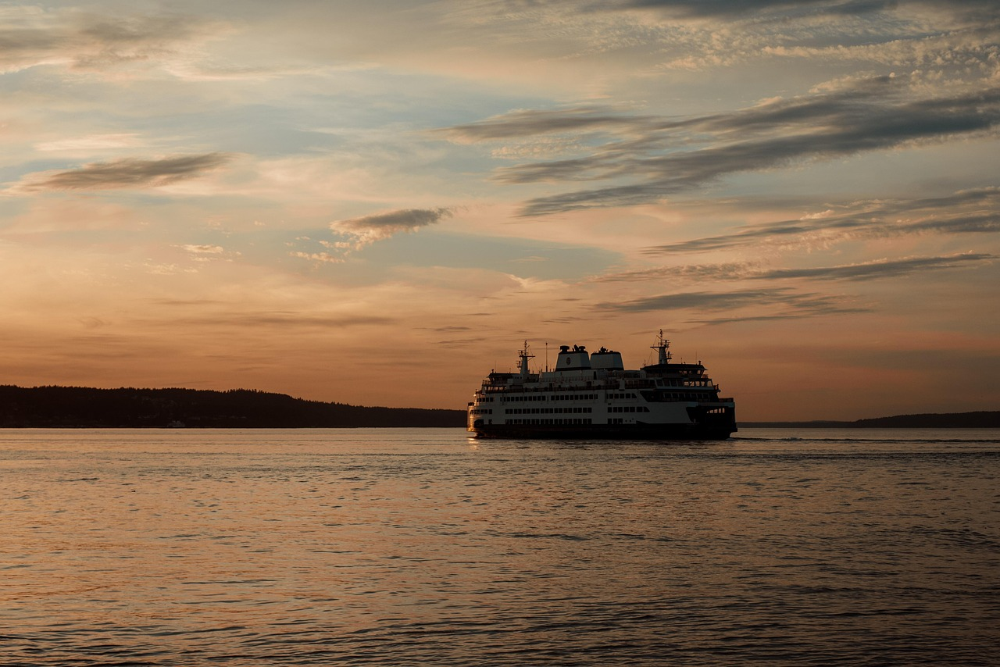
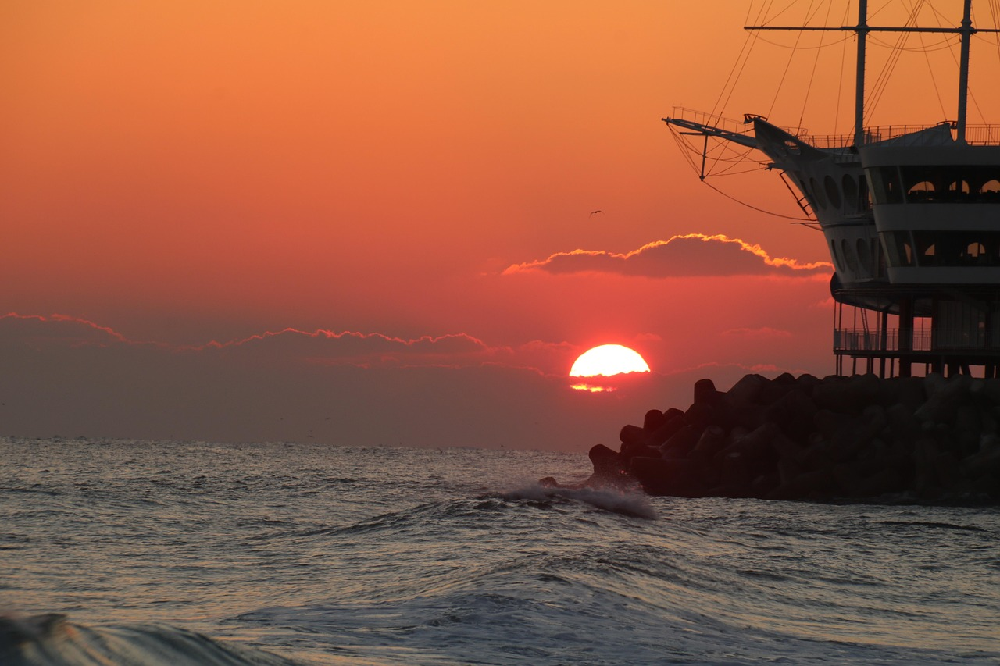
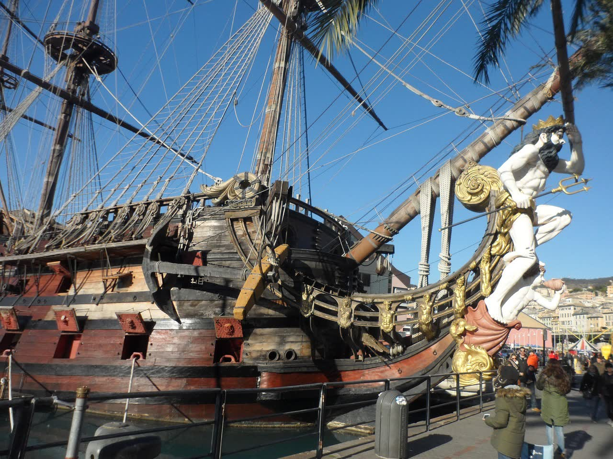
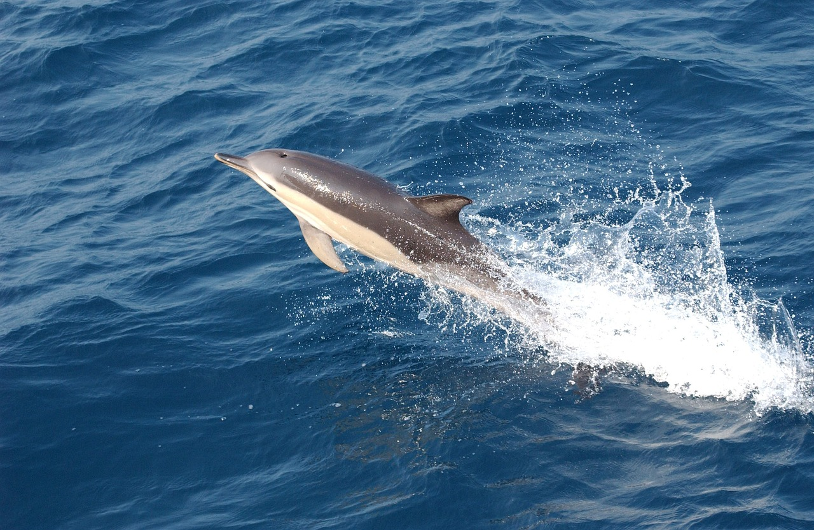
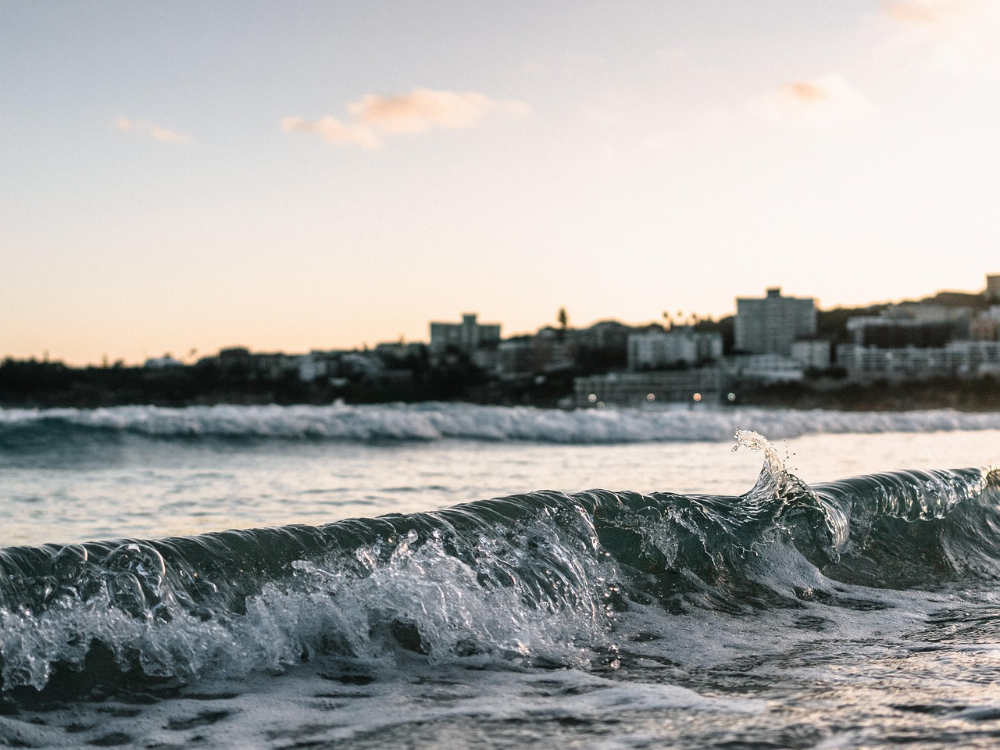

Strände
Strände
Die schönsten Strände Sardiniens
Von der Spiaggia della Pelosa bis Cala Goloritzé: ein Überblick über die bekanntesten Traumstrände der Insel, Region für Region.
 Kulinarik
Kulinarik
Sardische Küche: Gerichte, Wein & Restaurant-Tipps
Culurgiones, Fregola und Vermentino: die kulinarischen Klassiker der Insel – plus Tipps, wie man gute, unaufgeregte Restaurants erkennt.
 Kulinarik
Kulinarik
Agriturismi auf Sardinien: Essen wie auf dem Land
Mehrgängige Bauernhof-Menüs abseits der Küste – was ein gutes Agriturismo-Restaurant ausmacht und worauf man achten sollte.
 Kulinarik
Kulinarik
Die besten Weine Sardiniens
Vermentino, Cannonau und Carignano: die drei prägenden Rebsorten der Insel und was sie geschmacklich unterscheidet.
 Kulinarik
Kulinarik
Die besten Biere Sardiniens
Von der Traditionsbrauerei Ichnusa bis zur wachsenden Craft-Beer-Szene der Insel.
 Kulinarik
Kulinarik
Die besten Liköre Sardiniens
Mirto, Fil'e Ferru und Limoncino: die klassischen Digestifs der Insel zum Abschluss eines Essens.
 Ausflüge
Ausflüge
Die schönsten Ausflugsziele auf Sardinien
Von der Felseninsel Tavolara über die Grotte di Nettuno bis zu den Nuraghen im Landesinneren – Ideen für Tagesausflüge.
 Reiseziele
Reiseziele
Regionen Sardiniens: Wo es sich hinzureisen lohnt
Costa Smeralda, Alghero, Cagliari, Barbagia & Co.: ein Überblick über die wichtigsten Regionen und ihren jeweiligen Charakter.

AnreiseMit der Fähre nach Sardinien: Die Schiffe
Moby, Tirrenia, GNV & Co.: was moderne Autofähren nach Sardinien heute bieten – von Kabinen bis Bordrestaurant.

AnreiseTagfähre oder Nachtfähre? Die Vor- und Nachteile
Landschaft genießen oder ausgeschlafen ankommen? Ein ehrlicher Vergleich beider Varianten für die Überfahrt.

AnreiseFährhäfen im Vergleich: Von wo nach Sardinien?
Genua, Livorno, Civitavecchia, Savona oder gleich ab Frankreich (Toulon): Überblick über die wichtigsten Abfahrtshäfen.
 Anreise
Anreise
Flughäfen im Vergleich: Olbia, Cagliari oder Alghero?
Drei internationale Flughäfen, drei sehr unterschiedliche Regionen – welcher passt zu welcher Reiseroute?
 Natur
Natur
Tiere auf Sardinien: Wildpferde, Esel & Gänsegeier
Von den Wildpferden der Giara über die weissen Esel Asinaras bis zu Flamingos: die ungewöhnliche Tierwelt der Insel.

NaturDelfintouren auf Sardinien: Wo und worauf achten?
Rund um Golfo Aranci, La Maddalena und den Golfo di Orosei stehen die Chancen gut – Tipps für einen verantwortungsvollen Ausflug.
 Natur
Natur
Wildschweine auf Sardinien
Weit verbreitet in freier Wildbahn und ein fester Bestandteil der sardischen Küche – was man über Cinghiale wissen sollte.

TippsSardinien nach Jahreszeit: Wann ist die beste Reisezeit?
Von blühendem Frühling bis ruhigem Winter: was die Insel in jeder Jahreszeit zu bieten hat.
 Tipps
Tipps
Praktische Reisetipps für Sardinien
Strand-Reservierungen, beste Reisezeit, Mietwagen & Co.: eine kompakte Checkliste für die Vorbereitung.